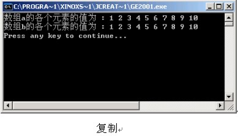

在日常生活中，盒子的作用就是来放东西，但是是不可能把衣服和食品放在一起的，会有专门放衣服的盒子，也会有专门放食品的盒子。在Java中，数组就好比日常生活中的盒子，用来存储数据。每一个数组也是有类型的，用来放相应类型的数据。数组是一种存储数据的数据结构。下面介绍数组的创建和使用，以及其注意事项。通过本章的学习，同学们应该能够完成下面的目标。
- 知道如何创建数组，包括创建一维数组和多维数组。
- 能够对数组进行初始化操作。
- 熟练掌握在实际中，如何借助数组来解决问题。
假设现在有100个苹果，如果分散存放会很不好管理，如果集中存放的话，大家会想到放在一个盒子里。在Java里也是这样，100个苹果每个都放在一个变量里，会显示代码很凌乱，如果用数组存放会显示代码很整洁。所以说数组是存放数据的一种数据结构。下面讲解数组是如何创建的。
定义9 个int型的变量，分别存放1-9的数字。代码为：
int i1 = 1; int i2 = 2; int i3 = 3; int i4 = 4; int i5 = 5; int i6 = 6; int i7 = 7; int i8 = 8; int i9 = 9;
这样极大地浪费了内存空间，所以我们用一个数组型变量来存放以上9个变量
//创建数组 int[] i = new int[9]; //给数组的每一项赋值 i[0] = 1; i[1] = 2; i[2] = 3; i[3] = 4; i[4] = 5; i[5] = 6; i[6] = 7; i[7] = 8; i[8] = 9;
注意：数组的下标是从0开始的
在一座楼中通常要有多个单元，一个单元中又有多个房间。在Java中多维数组就是这种设计，多维数组是一种嵌套的数组，一维数组的每个元素又是一个一维数组。多维数组的代码是这样的。
public class ChuangJian2
{
public static void main(String args[])
{
//定义了一个多维数组
int i[][] = new int[4][4];
}
}
初始化是给数组中的元素进行赋值，数组的赋值有创建赋值和动态赋值。这就好比确定一座楼有多少个单元，一个单元中又有多少个房间。下面介绍数组的赋值方法，并举例说明。
数组的创建初始化是数组创建完后系统对各个元素进行的默认赋值，系统对各个基本类型的默认初值如下：
| boolean | false |
| byte | 0 |
| char | '\u0000' |
| short | 0 |
| int | 0 |
| long | 0l |
| float | 0.0f |
| double | 0.0d |
数组除了可以在创建的同时进行初始化，也能在运行期间对数组各个元素进行赋值。对数组元素进行赋值通常使用for循环语句来进行。
//testArray类,所描述的是用for语句进行数组初始化
public class ChuShiHua3
{
public static void main(String args[])
{
//下面创建一个int型的数组,数组的长度为10.
int a[] = new int[10];
for(int i = 0; i < a.length; i++)
{
a[i] = i + 1;
System.out.println("数组的各个元素的值为 : " + a[i]);
}
}
}
在前面介绍了创建一维数组，以及多维数组的方法，并演示了数组的初始化等操作。下面介绍操作数组的常用方法。
数组里各个元素的值可以用数组的引用和使用循环对其值的赋值，但要注意两个不同长度的数组进行复制的时候下标越界的问题。下面通过代码来演示。
用for循环演示对数组各个元素的值的复制。
public class Shuzu
{
public static void main(String args[])
{
int[] a = new int[] {1, 2, 3, 4, 5, 6, 7, 8, 9, 10};
int[] b = new int[a.length];//获取a的长度
for (int i = 0; i < a.length; i++)
{
b[i] = a[i];//将a的值赋值到b
}
}
}
打印两个数组的内容，结果如下：
数组元素的排序是在数组的操作中是很常见的。数组排序的方法有：简单插入排序法、冒泡排序法、二分排序法等，详见数据结构。
public class LianXi1
{
public static void main(String[] args)
{
//定义了一个char型的数组a
char[] a;
//实例对象数组，长度为25
a = new char[26];
for (int i = 0; i < 26; i++)
{
//通过把A的ascii码和循环变量进行相加来转换各个字码的ascii码
a[i] = (char)('a' + i);
System.out.print(a[i]);
if(a[i]=='z')
{
System.out.println("结束");
}
}
}
}
2.对已有数组元素按照一定规则进行排序。
【提示】可以使用sort方法将数组中的所有数组元素按照从小到大的顺序进行排列。
//引入包Arrays，因为Arrays.sort需要此包
import java.util.Arrays;
public class LianXi2
{
public static void main(String[] args)
{
//定义一个数组a,并确定其元素
int[] a = {22, 33, 11, 56, 5};
System.out.println("数组排序前:");
paiXu(a);
//用sort方法对数组进行排序
Arrays.sort(a);
System.out.println("数组排序后:");
//调用方法进行数组排序的显示
paiXu(a);
}
private static void paiXu(int[] a)
{
for (int i = 0; i < a.length; i++)
{
System.out.println("a[" + i + "]=" + a[i] + " ");
}
}
}
在本章通过对数组的创建以及数组的初始化的讲解，让同学们对数组有了基本的了解。并演示了数组的常用方法等操作，且对前面的知识进行了巩固。本章的重点是对数组的创建和初始化。如果想了解更多的关于本章的内容，可以参考电子工业出版社出版的《JAVA面向对象编程》一书进行学习。